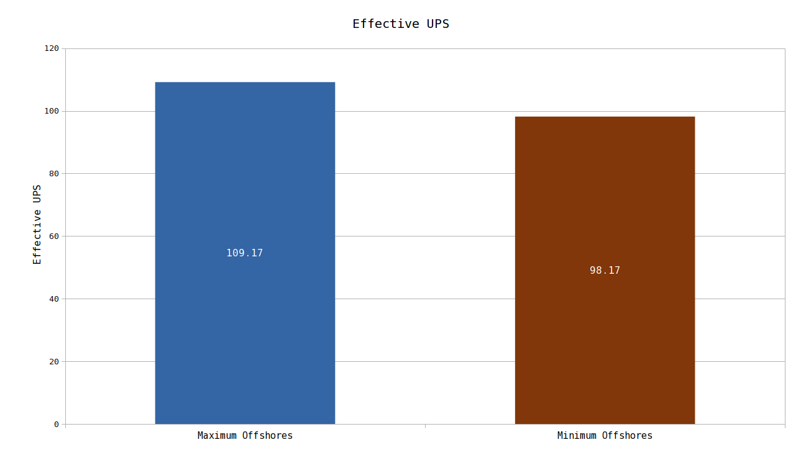

Is it better to use offshore pumps where they are needed directly in, or use as few as possible and pipe water to the destination?
Factorio Version 0.16.51
The TLDR
It is better to use offshore pumps at every opportunity pointing straight into the machine.
The Question
For many entities in the game, water is required. By using landfill, we can engineer a factory where it's possible to point a offshore pump directly into one of these inputs. This saves us several pipes, typically 3 or 4 per crafting machine.
However, these offshore pumps could possibly have a greater total UPS cost than the saved pipes.
The Test
For this test I have created a plastic only design that converts raw material into plastic. Plastic is then dumped straight into an infinity chest.
One of the Plastic setups has 20 offshore pumps directly pointing into the required fluid inputs. The other has as few offshores as required, 2 in this case. The refineries have their own water pipe network, and the cracking has the other water pipe network
The offshore reduced paste has: 312 pipes and 2 offshore pumps. The offshore direct paste has: 232 pipes and 20 offshore pumps. This means that each offshore saves roughly 4 pipes each. With better design, this number could be reduced, possibly to as low as in the range of 3-4 (3 would be difficult for recipes that take two fluid ingredients). However, I don't think that results will change significantly compared to that case.
Next we will need to scale up the number of these pastes until we reach roughly 60 UPS. Putting 200 pastes of each yielded approximately 90 UPS in game, which I believe is close enough to accurately determine which design method is better.
The Data

In a test where each map was benchmarked for 100000 ticks, and benchmarked for that duration 3 times, the design using the maximum number of offshore pumps achieved ~109 UPS, where as the design that used as few offshore pumps as required achieved ~98 UPS.
This means that using offshore pumps directly in to fluid inputs should beat piping water. It is not possible to test every design, but there is a good degree of certainty that no design that pipes water beats one that directly inputs it.
In the future, all fluid designs should input water directly to the appropriate spot.
It's possible, although unlikely, for a different design to have a different result. If you have a different or novel design that you believe could contradict this result, please create an issue on the github.